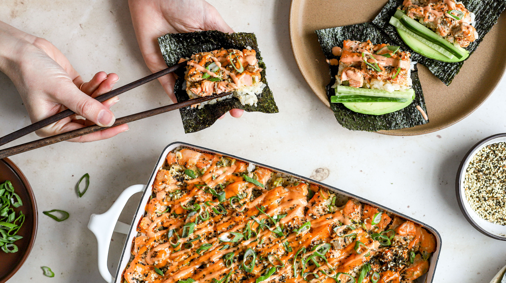

Sushi Bake

Description: A deconstructed salmon roll baked in casserole dish that you can easily make at home for the whole family or bring to friend gatherings. It consists of layers of sushi rice, creamy salmon and crab mixture, and flavorful toppings.
Ingredients
- Sushi Rice
- Rice Vinegar
- Sugar
- Imitation Crab
- Salmon
- Cream Cheese
- Sriracha Mayo
- Furikake
- Sesame Seeds (optional)
- Seaweed
Steps
- Cook Sushi Rice according to package instructions
- In a microwave-safe bowl, combine rice vinegar, sugar, and salt. Microwave for about 30 sec, or until sugar and salt are dissolved. Pour the vinegar mixture into the cooked rice and gently mix until well combined. Set the rice aside.
- To cook the salmon, first season with salt and pepper. You can either throw it in the air fryer and cook at 400F for 10-12 minutes, or bake it in the oven at 375F for 15-17 minutes.
- In a large bowl, shred imitation crab and cooked salmon into pieces. Then add cream cheese and Sriracha Mayo. Mix everything together until smooth and well combined.
- Preheat the oven to 400F and prepare a 9x9 inch or 9x13 inch baking dish.
- Assemble the Sushi Bake: transfer the cooked sushi rice to the baking dish and gently press down to flatten it out. Sprinkle a generous amount of furikake onto the rice, then top with a layer of salmon-crab mixture. Gently press down and smooth the surface.
- Bake at 400F for 10-15 minutes.
- Take sushi bake out of the oven. Top with more Sriracha mayo, chili furikake, sesame seeds, and chopped green onions.
- o serve, scoop a spoonful of sushi bake and wrap it with seaweed snack. Enjoy!
Home